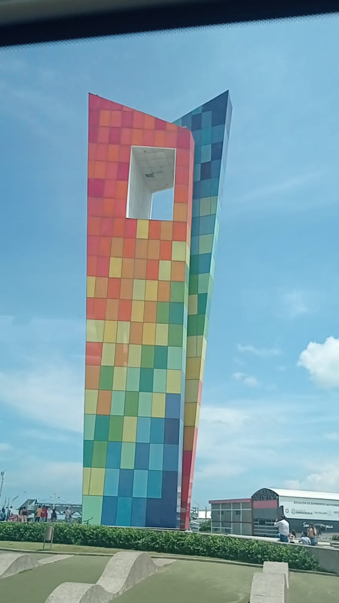

TURISMO:
KAROL PEREZ
Hace 3 años estoy en una agencia turistica aipe-huila la cual me permito acceder a varios encuentros con la naturaleza el mar y lugares casi no visitados.

| opinion |
|---|
| ✫✫✫✫✫ |
| ✫✫✫✫ |
| ✫✫✫ |
| ✫✫ |
| ✫ |